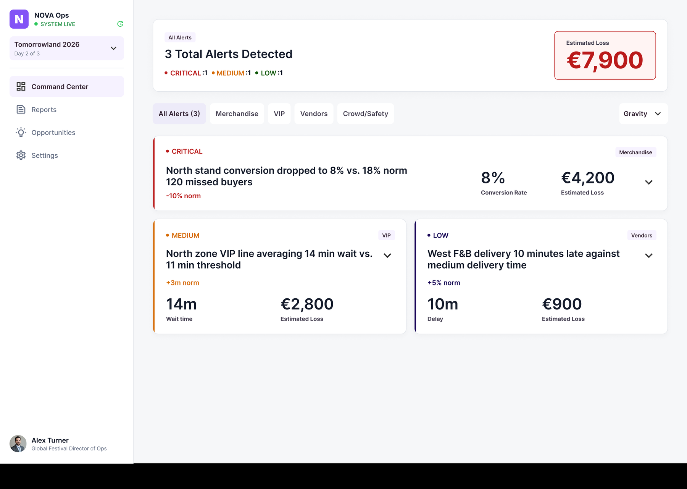
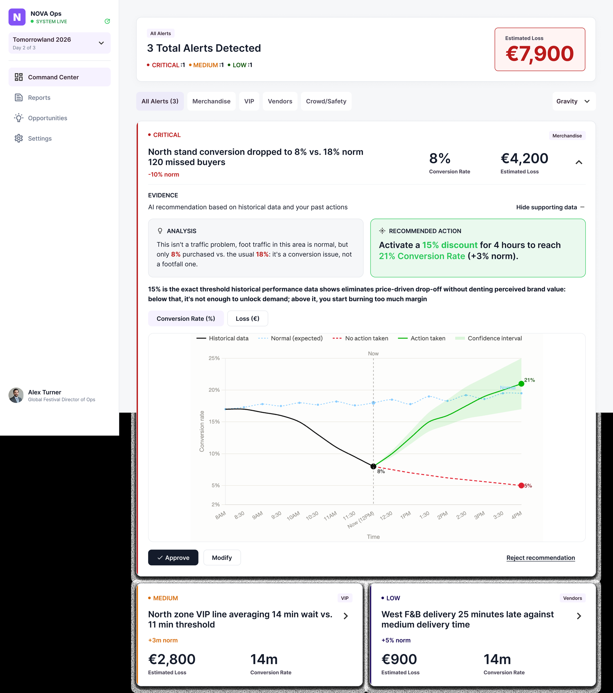
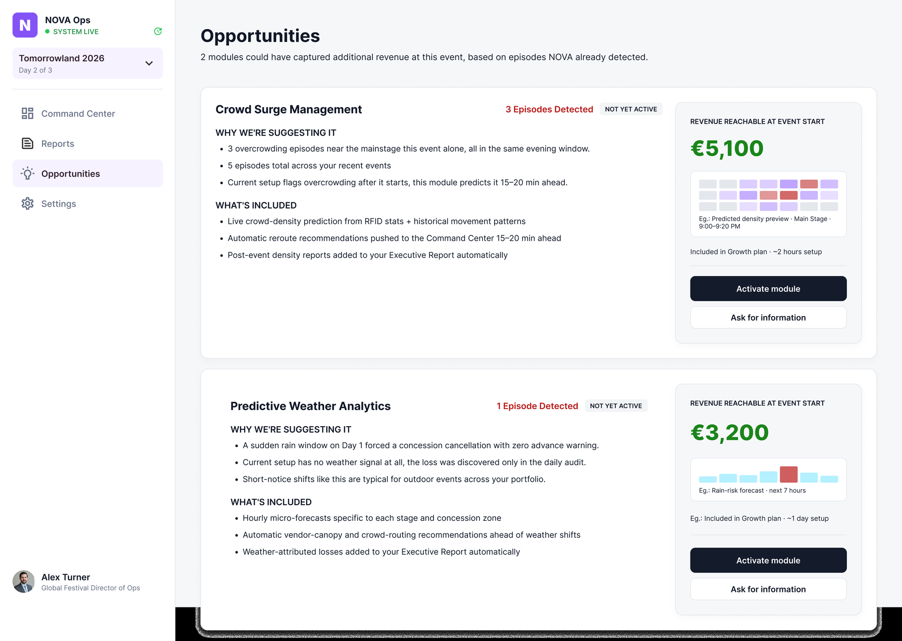
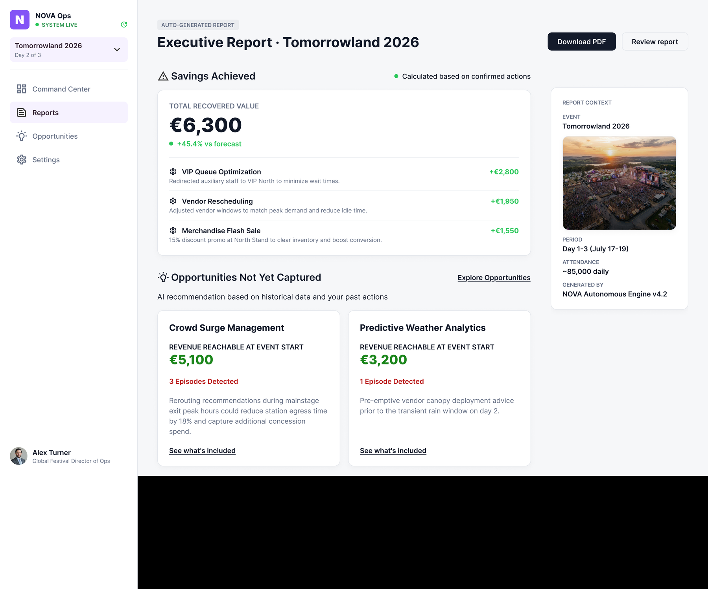
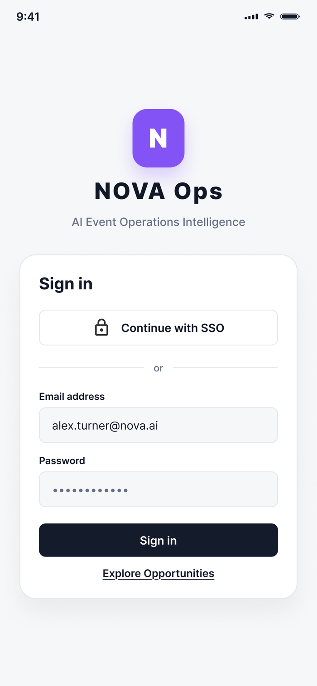

NOVA Ops: From Data Dump to Agentic Command Center
A concept redesign of a B2B SaaS platform's Daily Revenue Audit workflow: turning an overwhelming data dump into an AI-assisted command center a festival operations director can actually trust, then using that trust as the precondition for product-led growth.

The challenge
NOVA Ops is a concept project: a hypothetical B2B SaaS platform for companies running mega-festivals, think Tomorrowland or Coachella-scale events. An AI engine reads operational data, RFID wristband pings, POS transactions, attendance maps, to find where a festival is losing economic value. The Daily Revenue Audit, the workflow redesigned here, is just one module in a larger platform; others, like Predictive Weather Analytics and Crowd Surge Management, are sold separately, which is why product-led growth toward those modules makes sense: the customer has already bought a piece of the platform.
The brief: an MVP is already live, multiple customers are onboarded, and they have given negative feedback. The underlying AI engine works, the interface doesn't. To prove its value, the interface tries to show the user everything, producing exactly the kind of context overload that erodes trust instead of building it. Because the UI is cluttered, users don't trust the AI's recommendations, and with that trust, the upsell insights the product depends on are lost too.
What the redesign needed to achieve
- Make the AI's recommendations trustworthy enough to act on during a live event
- Replace a raw data dump with a synthesis the user can judge in seconds
- Introduce a concrete, explainable AI-proposed action; today the product is still manual
- Prove the value of AI recommendations over time, to justify cross-selling other modules
- Do it without a single intrusive upsell banner
Who it's for
Global Festival Operations Director (primary persona)
Manages multiple huge events simultaneously across regions, hands-on, with very little time available during a live event. Balances three often-conflicting priorities: crowd safety (non-negotiable), artist scheduling (rigid contracts) and VIP/concession revenue (what he's measured on). Any AI recommendation has to be justifiable to his own leadership, trusting it himself isn't enough.
Key Account Managers
Never touch the tool directly, but collect negative customer feedback, the way the company currently measures whether the redesign is working.
Festival / promoter leadership
Recipient of the executive reporting, most likely sees only the final summary, never the tool itself.
The legacy workflow
Five steps, five distinct failures, this is the map the redesign started from.
Triage → The Data Dump
Logs in to spot the day's revenue leakage. No visual hierarchy: massive data grids force an export to Excel just to find where value is being lost.
Root cause analysis → Context Overload
Spots a spike in unsold merchandise and clicks to investigate. The AI tries to explain itself by showing everything: RFID pings, heat-map hex codes, every POS line, instead of a synthesis.
Fixing the problem → Manual Friction
Wants to quickly prevent this bottleneck going forward, but has to leave the dashboard, dig into a settings menu, and manually write a new pricing or re-routing rule from scratch.
The upsell moment → The Intrusive Ad
Notices money lost to a gap only another module could cover, and gets a generic "Contact Consultant" banner next to the data table, disconnected from the specific numbers.
Executive reporting → Zero Tracking
Has to present the savings achieved to leadership. The system never tracks its own recommendations: screenshots and a hand-built deck, alone.
The key insight
Data dump → no trust → no action → no proof of value → upsell lost
AI transparency and trust isn't a requirement parallel to product-led growth, it's its precondition. You can't propose an upsell based on missed savings if the user doesn't already trust the number being shown.
Two interpretive calls shaped everything downstream. First, "too much data" is not the root cause: the brief says visual hierarchy is missing, not volume; reading it as too much data would mean hiding data, which risks the explainability the brief requires. Second, "agentic" describes a target state, not today's reality: at the fixing step the user still leaves the dashboard and writes the rule manually, so a concrete AI-proposed action had to be introduced by the redesign, not assumed to already exist.
Two problems, in sequence
Chapter 2 has no material to work with until Chapter 1 is solved: without a recommendation trusted enough to act on, there's nothing to track or use as proof for the upsell.
Chapter 1 · Operational trust
The Global Festival Operations Director can't trust the AI's recommendations quickly enough during a live event, because the tool replaces synthesis with a raw dump of all the data, forcing him to redo the analysis himself in Excel while losses accumulate.
Chapter 2 · Value proven over time
The Director has no way to demonstrate, over time, that AI-suggested actions reduced losses, because the system doesn't track the outcome of its own recommendations, blocking him from justifying his choices to leadership or perceiving the value of additional modules.
How success would be measured
Time to first action
Time between login and the user's first decision on an AI recommendation, approve, modify or reject, directly on the card. Not the first click: the precise boundary between still looking and trusting the number enough to decide.
% of flagged anomalies acted on
Directly from the AI's card, without leaving the flow to export data.
% of reports auto-generated
Using the tool's automatic reporting feature, instead of a hand-built deck from screenshots.
% of missed savings converted
Into purchase or trial of the linked module, tying the product directly to revenue.
Ruled out: "time spent in platform." For a tool meant to reduce context overload, more time in-product is a bad signal, not a good one.
From needs to design opportunities
Triage → Management by exception
"Understand right away whether I'm losing money and how serious it is, so I can decide whether to act now or it can wait."
Root cause → Progressive disclosure
"Quickly understand the most likely cause and how much it weighs, without cross-referencing sources myself."
Fix → Human-in-the-loop
"Apply a concrete fix, or approve/adjust the AI's proposal, without leaving my workflow to configure it from scratch."
Upsell moment → PLG on missed savings
"Understand whether a loss is preventable and worth preventing, before deciding, with concrete numbers, not a sales pitch."
Reporting → Auto-generated report
"Quickly show which recommendations I followed and how much value came from it, without rebuilding everything by hand."
Design principles
Management by exception
By default, show only anomalies that deviate from the norm, sorted by economic impact, never the full dataset. Pattern used in monitoring dashboards: NOC, PagerDuty/Datadog, multi-site retail reporting.
Progressive disclosure
Every anomaly opens with a readable summary; raw data stays behind an explicit click. Data-viz allowed at first glance, understandable in under a second. Jakob Nielsen, Nielsen Norman Group; Stephen Few, "Information Dashboard Design."
Human-in-the-loop for every consequential action
The AI proposes a concrete action with visible reasoning; the user explicitly approves, modifies or rejects. Amershi, Weld, Vorvoreanu et al., "Guidelines for Human-AI Interaction," Microsoft Research, CHI 2019.
Always explain the why
Every number, alert or recommendation carries the reason the AI generated it, available but not intrusive: which data, which threshold, which confidence level. Google PAIR, "People + AI Guidebook," Explainability + Trust.
Design & prototype
Command Center: triage in under ten seconds
The legacy screen was a data dump with no visual hierarchy. The Command Center replaces it with a summary band showing today's aggregated impact and active-anomaly count, category filters, and only the exceptions, sorted by economic impact, never an "everything is normal" row. Severity is shown as a left-edge indicator only, never a full-card colour, to avoid a traffic-light effect.
The recommendation card: from raw data to a decision
Each anomaly opens into what happened, how much it weighs (today's loss plus a projection), why the AI thinks so (a summary first, the raw comparison behind "see detail"), what it proposes, and Approve / Modify / Reject & request alternative. The proposal states its consequence before approval, for example activating a 15% discount, rather than asking for blind trust.

Product-led growth, without the banner
Instead of a generic "Contact Consultant" ad disconnected from the data, additional modules are surfaced with the same evidence logic as the alerts: real detected episodes, the revenue reachable by activating them, and a discreet "see what's included" link, never a purchase button. The number is meant to grow from real recurring episodes over time, it's the growth of that number that creates the need, not the banner.

Executive reports, auto-generated
The same PLG logic anchors to a ritual the Director already has to do: reporting to leadership. Savings achieved and opportunities not yet captured live in one auto-generated document, so there is finally a record of what the AI recommended and what it was worth, instead of a hand-built deck of screenshots.

Same logic, everywhere
The Director checks in with just a few minutes before getting back on-site, that's the triage job-to-be-done, and it happens on a phone as often as a desk. The experience adapts across desktop, tablet and mobile without compromising the core experience: tablet for control and deeper analysis, mobile for quick checks and immediate decisions. The mental model stays constant, management-by-exception logic, severity language and card anatomy, even as density changes; mobile isn't a smaller desktop, it's designed around the Director's need to quickly understand what requires attention and why.

Working with AI
Simulated researcher / PM
Used to validate readings of the brief and locate real frameworks instead of inventing principles.
Critical sparring partner
Flagged in real time when a need's wording slid toward a solution already in mind, when a root cause was read at the wrong level, or when a proposed metric was product taxonomy rather than a UX measure.
Production tool
Built the wireframes directly in Figma from content specs validated line by line, and helped produce the walkthrough deck. Never generated blindly.
What stayed a design decision, explicitly
- Keeping both chapters of the problem, instead of collapsing them into one
- The human-in-the-loop options, including "partially approve" and "reject & request alternative"
- Anchoring the PLG mechanism to an existing reporting ritual, instead of a new dedicated section
Outcome
This is a concept project, not a shipped product, so there's no live usage data to report. What it demonstrates instead is a full, defensible reasoning chain: from a business bottleneck, through a workflow audit, to a problem statement with two sequential chapters, success metrics tied to each chapter, and design decisions that trace back to a specific principle and a specific need. Every screen in this case study answers to a principle, every principle answers to a need, and every need traces back to one of the two problems this solves.